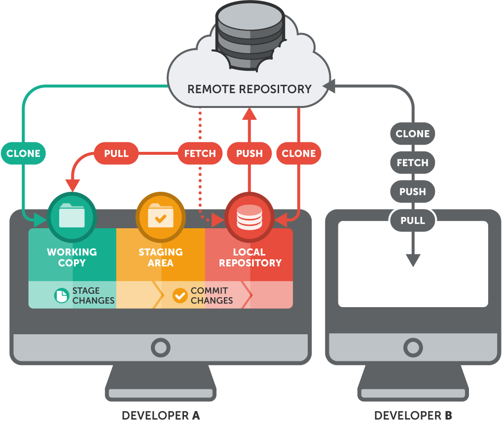

Technical Lab Meeting
May 29, 2019
Emilio Palumbo
an open source, distributed, version control system
- most used thanks to its performance, security and flexibility
Version Control

- collaboration
- storing versions (Properly)
- restoring previous versions
- understanding what happened
- backup
Distributed
- repository replicas
- local operations
- workflow flexibility
Git
Repository
stores versions and metadata
a simple hidden folder named .git in the root directory
should not touch anything inside this folder
- local: on your local computer as a
.gitfolder inside your project's root - remote: typically located on a remote server. No actual working files associated (bare)
# Create a local repo
$ mkdir foo
$ cd foo
$ git init
Git configuration
- system config, in
$(prefix)/etc/.gitconfig - global config, in
~/.gitconfig - repository config,
.git/configin your project root- valid only for your working copy
$ git config --global user.name "John Doe"
$ git config --global user.email "john@doe.org"
# local alias
$ git config alias.st status
Ignoring files
create a .gitignore file in your project's root folder
- Ignore a specific file
e.g.
path/to/file.ext
- Ignore all files with a certain name (anywhere in the project)
e.g.
file.ext
- Ignore all files of a certain type (anywhere in the project)
e.g.
*.ext
- Ignore all files in a certain folder
e.g.
path/to/folder/*
# R example .gitignore file
# History files
.Rhistory
.Rapp.history
# Session Data files
.RData
# User-specific files
.Ruserdata
# Example code in package build process
*-Ex.R
# Output files from R CMD build
/*.tar.gz
# Output files from R CMD check
/*.Rcheck/
# RStudio files
.Rproj.user/
# produced vignettes
vignettes/*.html
vignettes/*.pdf
# knitr and R markdown default cache directories
*_cache/
/cache/
# Temporary files created by R markdown
*.utf8.md
*.knit.md
File status
- untracked: not under version control, can be a newly created or ignored file
- tracked: watched for changes by Git
git status
# git status exclude ignored files by default
git status --ignored
$ touch README.md
# the file is untracked
$ git add README.md
$ git status
On branch master
Your branch is up to date with 'origin/master'.
Untracked files:
(use "git add ..." to include in what will be committed)
README.md
$ git status
On branch master
Your branch is up to date with 'origin/master'.
Changes to be committed:
(use "git reset HEAD ..." to unstage)
new file: README.md
Commit
a wrapper for a specific set of changes
- marks a specific version of your project
- changes commented in a short "commit message"
$ git commit -m "Add readme"
Branches
diverge from the main line of development and continue to do work without messing with it
- incredibly lightweight in Git, compared to othe VCS
- main branch is called
master
# show branch list
git branch
# create a new branch called dev from master
git branch dev
# work in that branch
git checkout dev
# equivalent oneliner
git checkout -b dev
Remotes
a copy of the repository (the .git folder)
- multiple remotes supported
- different types
http(s)://ssh://file://
# Create a repo to be used as remote (e.g. on a server)
$ mkdir foo.git
$ cd foo.git
$ git init --bare
# Add the remote to the local repo (ssh:// implicit)
$ git remote add origin me@server.org:foo
# Push changes
$ git push origin master